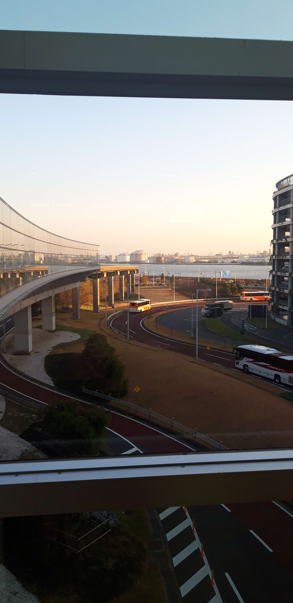
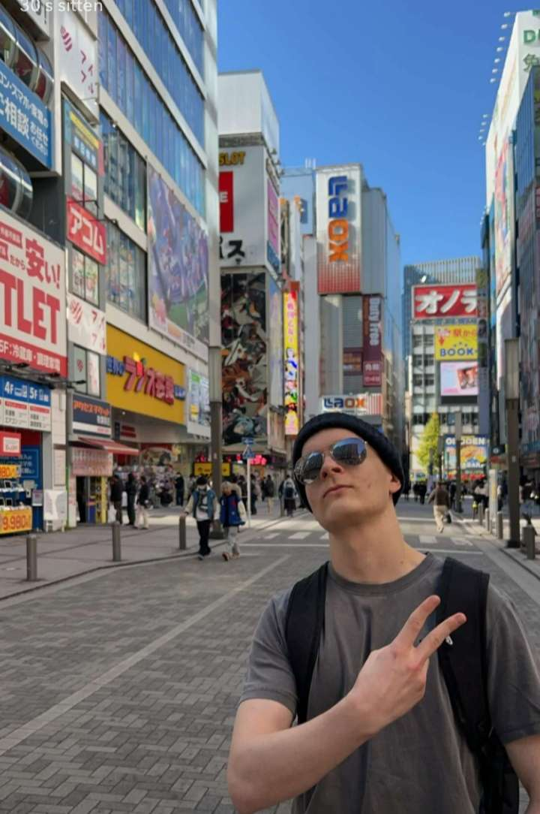
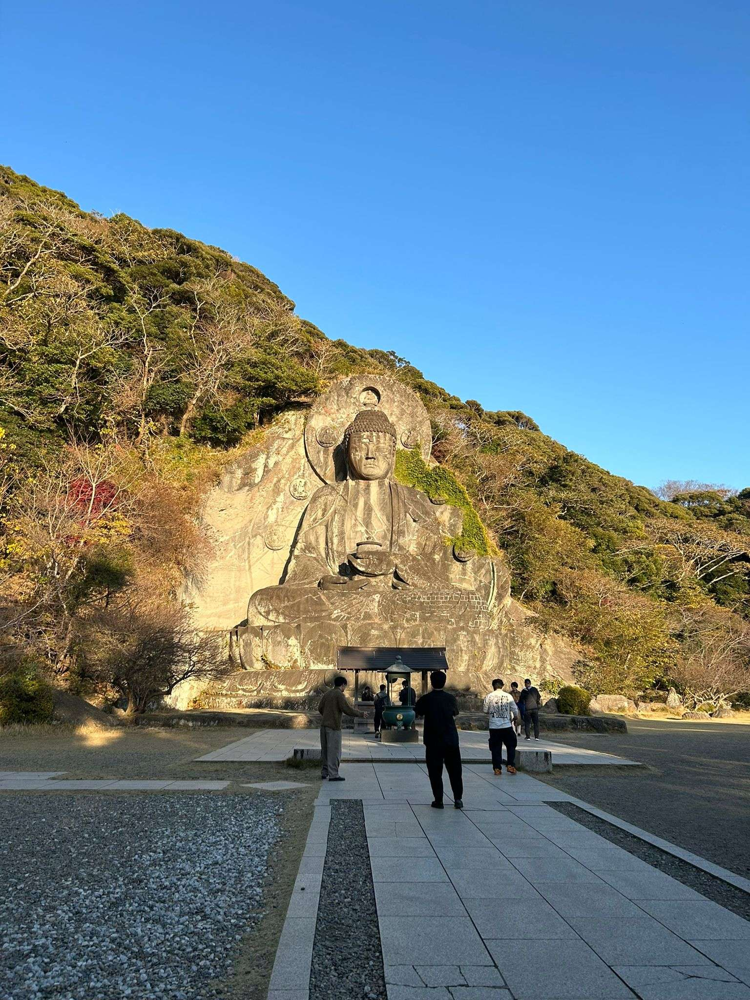

Saapumispäivä
Matkan alku on tietenki suuri kohokohta, koska siitä koko matka lähtee. Saapumispäivä oli 7.12.2023 ja se oli ensimmäinen kertani Japanissa,
joten se oli erittäin ainutlaatuinen hetki.

Akihabara
Akihabara on kohokohta, koska sieltä löytyi eniten kauppoja ja outua krääsää kaikista kaupungeista, joissa olimme.
Akihabara kuvastaa täydellisesti Japanilaista kauppoihin ja ostamiseen liittyvää kulttuuria ja on siitä syystä jäänyt mieleeni.
Sieltä löytyi paljon kyseenalaisia tuotteita ja hyvää ruokaa.

Nokogiri vuori
Nokogiri vuori on kaunis nähtävyys, joka sisältää muutamia temppeleitä ja suuren vuoren kylkeen kaiverretun Buddha patsaan.
Vuorella oli hienot näköalat ja mahtavaa luontoa. Kaikkiaan Nokogiri vuori oli erittäin henkinen kokemus.

Hakone
Hakone on vuorien välissä sijaitseva kaupunki, joka talviaikaan värjäytyy vaahterapuiden ansiosta oranssiksi.
Siellä sijaitsee paljon temppeleitä ja pyhäkköjä. Hakone on erittäin kaunis kaupunki, jolla on paljon Japanille tyypillistä tunnelmaa.
Kävimme Hakone retkemme aikana onsenissa, joka on japanilaisten nimitys kylpylöille. Kaikkiaan päiväretki Hakoneen oli yksi
parhaimmista kokemuksistani Japanissa.